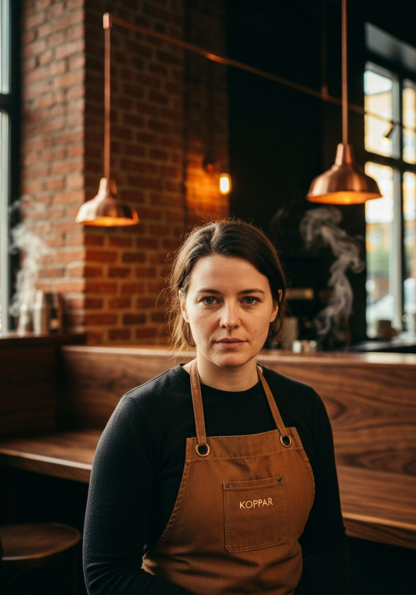
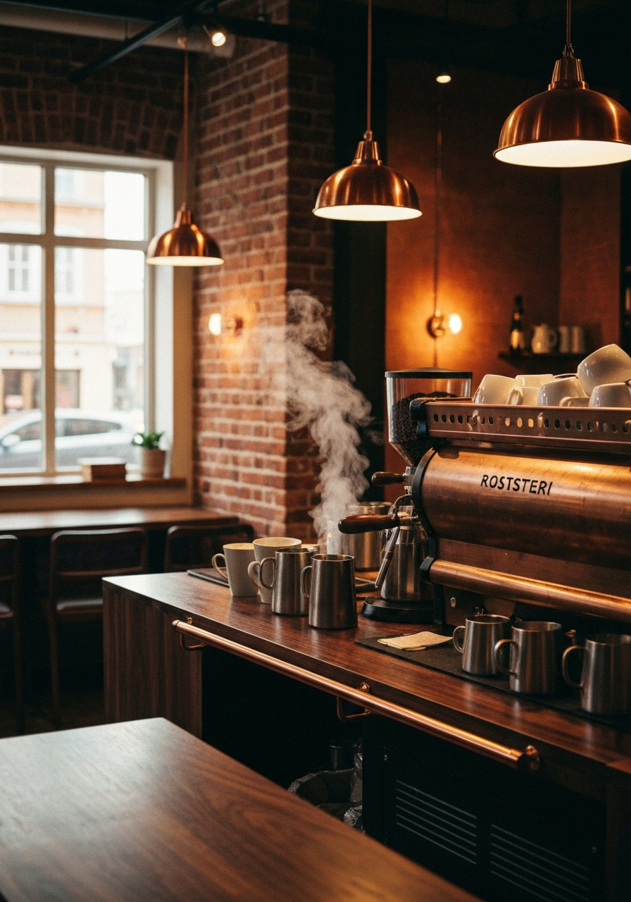

Om Koppar. Och rostningen.
Kaféet som fick Halmstad att bry sig om varifrån kaffet kommer.

Åtta år borta. Tillbaka i Halmstad.
Lena Björk jobbade i åtta år som barista i London och Amsterdam. 2019 utbildade hon sig till Q-grader — en certifierad kaffeprovare. Det är en av de svåraste certifieringarna inom kaffebranschen.
2022 kom hon tillbaka till Halmstad och öppnade Koppar på Köpmangatan. Inte för att starta ett kafé — utan för att ge Halmstad ett riktigt.
"Halmstad förtjänar ett riktigt kafé."
Idag frågar folk varifrån bönorna kommer. Det hände inte för tre år sedan.
I källaren. Varje vecka.
Koppar rostar sina egna bönor i källaren under kaféet. Varje vecka. Ingen annan i Halmstad gör det.
Råkaffet väljs efter smakprofil — ursprung, altitud och skördemetod avgör hur vi rostar. Varje rost vilar minst 48 timmar innan det bryggs.
Du kan lukta det när du går förbi på morgonen.
Bönorna finns att köpa med hem i påsar om 250g och 500g. Ny rost varje vecka.

Inte svårt. Men genomtänkt.
Alla är välkomna
Från fem minuter vid baren till tre timmar med en laptop. Båda är välkomna på Koppar.
Vi svarar alltid
Fråga om varifrån kaffet kommer, hur det rostades eller varför vi valde det. Vi svarar alltid.
Inget utan anledning
Varje val på menyn är ett aktivt beslut. Inte en kompromiss.
Kommit förbi på morgonen?
Dörren är öppen.
Mån–Fre 07:00–18:00 · Lör 08:00–17:00 · Sön 09:00–16:00
Köpmangatan 12, centrum Halmstad.